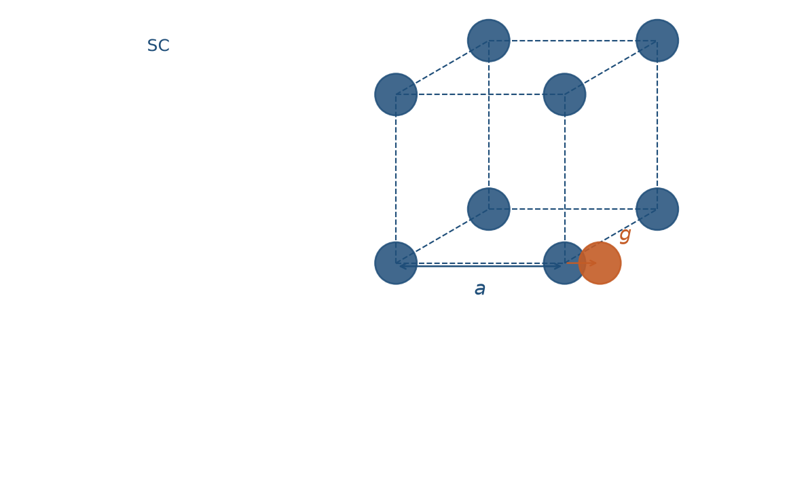
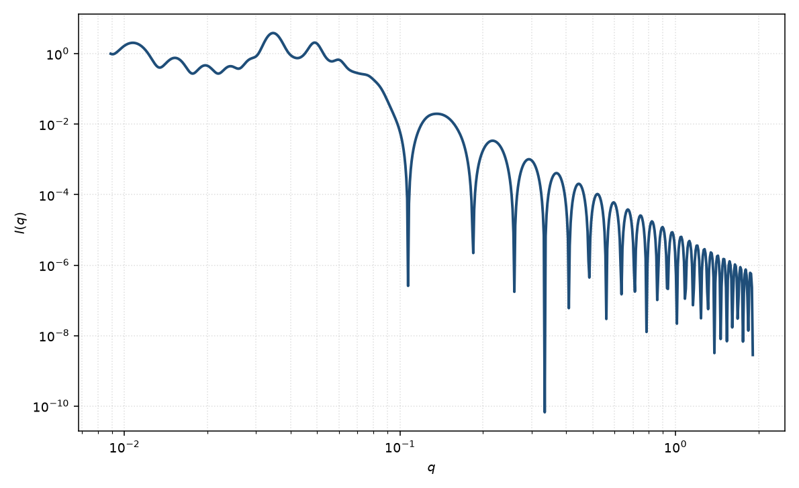

简单立方准晶
simple cubic paracrystal
适用场景
球形颗粒占据简单立方（SC）点阵、近程有序而远程逐渐失序时，用 Hosemann 三维准晶格子因子乘以球形式因子。典型对象：轻度有序的胶乳或二氧化硅胶体晶体、嵌段共聚物球形微区的简单立方排列，以及峰位比接近 $1:\sqrt{2}:\sqrt{3}$ 的粉末谱。
液体样硬球结构因子只有宽而少的相关峰；准晶在若干 $q_{hkl}$ 给出可分辨的布拉格峰，且高阶峰随畸变因子 $g$ 迅速变弱。层状一维堆叠用层状准晶，不要套三维立方格子。
物理图像
Hosemann 把三个正交晶格矢量写成独立的高斯间距涨落。一维格子因子 $Z_1(q_x)$ 的高阶峰按 $\mathrm{e}^{-k q^2\sigma_a^2/2}$ 阻尼；三维理想准晶是三个 $Z_1$ 的乘积，再对取向作粉末平均。Matsuoka 等把该图像推广到 SC / BCC / FCC，并用 1990 年短文修正了 BCC、FCC 的晶胞因子。
SC 每个惯例晶胞一个格点，全部 $hkl$ 都允许。最近邻 $d_{\mathrm{nn}}=a$，第一峰为 $(100)$，$q_1=2\pi/a$。球半径 $R$ 只进入 $P(q)$：它调制峰的包络，不移动 $q_{hkl}$。
示意图


核心公式
有限 $N$ 的一维 Hosemann 因子（$g=\sigma_a/a$）
$$Z_1(q_x)=1+\frac{2}{N}\sum_{k=1}^{N-1}(N-k)\cos(k q_x a)\,\mathrm{e}^{-k q_x^2 (g a)^2/2}.$$SC 三维格子因子为 $Z(q)=Z_1(q_x)Z_1(q_y)Z_1(q_z)$，粉末强度 $I(q)\propto P_{\mathrm{sph}}(q)\,\langle Z(\mathbf{q})\rangle_{\hat{q}}+B$。球形式因子 $P_{\mathrm{sph}}$ 取 Rayleigh 函数。反射位置 $q_{hkl}=(2\pi/a)\sqrt{h^2+k^2+l^2}$。
参数表
| 参数 | 符号 | 含义 | 单位 | 典型范围 |
|---|---|---|---|---|
| 晶格常数 | $a$ | 立方惯例晶胞边长 | Å | 由一级峰位反推 |
| 畸变因子 | $g$ | Hosemann 相对涨落 $\sigma_a/a$ | 无量纲 | $0.03$–$0.25$ |
| 相干晶胞数 | $N$ | 有限畴沿一轴的重复数 | — | 4–40 |
| 球半径 | $R$ | 占据格点的均匀球半径 | Å | $2R$ 小于最近邻 |
| 衬度 | $\Delta\rho$ | 粒子与溶剂的 SLD 差 | Å$^{-2}$ | 组成或对比实验 |
| 标度 / 本底 | $\mathrm{scale}$, $B$ | 前置因子与常数本底 | 与强度单位一致 | 实验相关 |
拟合注意
取向：粉末平均把三维倒易点涂成 Debye–Scherrer 环，一维曲线上只剩 $q_{hkl}$。纤维或剪切取向的胶体晶体应保留极角，不要用各向同性粉末公式去拟合弧向收窄的二维峰。
$g$ 与有限畴 $N$、仪器分辨率都加宽峰：优先用峰位定 $a$，用高阶峰是否存在、相对强度约束 $g$，再用一级峰宽估 $N$。未卷积分辨率时会把 smearing 读成更大的 $g$。尺寸多分散主要抹平球形式因子振荡，与格子 $g$ 正交，二者不要互换。
磁性：核磁 SLD 只改格点上的磁形式因子，格子 $a,g,N$ 与核通道共用。可辨识性：只有一个宽峰时，无法同时独立确定格子类型、$g$ 与 $N$，应先由峰位比（$q_{hkl}/q_1$）判断 SC / BCC / FCC，再放开畸变。
相近模型
- 体心立方准晶 — 体心格点，消光规则 $h+k+l$ 为偶数。
- 面心立方准晶 — 面心格点，未混指数消光。
- 准晶层状堆叠 — 同一 Hosemann 图像的一维层状版本。
- 硬球结构因子 — 液体样相关峰，不是布拉格格子。
参考文献
- Hosemann, R.; Bagchi, S. N. Direct Analysis of Diffraction by Matter. North-Holland: Amsterdam, 1962.
- Matsuoka, H.; Tanaka, H.; Hashimoto, T.; Ise, N. Elastic scattering from cubic lattice systems with paracrystalline distortion. Phys. Rev. B 1987, 36, 1754–1765. DOI: 10.1103/PhysRevB.36.1754
- Matsuoka, H.; Tanaka, H.; Iizuka, N.; Hashimoto, T.; Ise, N. Elastic scattering from cubic lattice systems with paracrystalline distortion. II. Phys. Rev. B 1990, 41, 3854–3856. DOI: 10.1103/PhysRevB.41.3854
- Guinier, A.; Fournet, G. Small-Angle Scattering of X-rays. Wiley: New York, 1955.